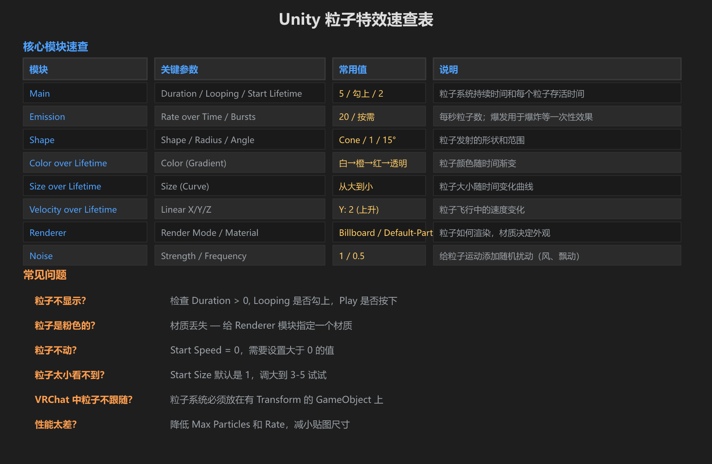
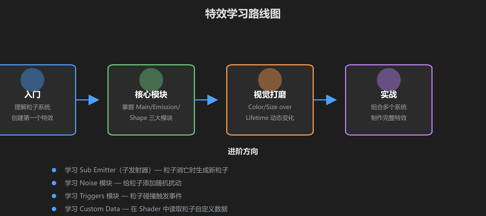

第 6 篇：速查表 & 常见问题
这是最后一篇，帮你快速回顾所有核心知识点，并解答常见问题。以后忘了什么就回来翻这一页。
1. 核心模块速查表

| 模块 | 关键参数 | 常用值 | 说明 |
|---|---|---|---|
| Main | Duration / Looping / Start Lifetime | 5 / 勾上 / 2 | 粒子系统持续时间和每个粒子存活时间 |
| Emission | Rate over Time / Bursts | 20 / 按需 | 每秒粒子数；爆发用于爆炸等一次性效果 |
| Shape | Shape / Radius / Angle | Cone / 1 / 15° | 粒子发射的形状和范围 |
| Color over Lifetime | Color (Gradient) | 白→橙→红→透明 | 粒子颜色随时间渐变 |
| Size over Lifetime | Size (Curve) | 从大到小 | 粒子大小随时间变化曲线 |
| Velocity over Lifetime | Linear X/Y/Z | Y: 2 (上升) | 粒子飞行中的速度变化 |
| Renderer | Render Mode / Material | Billboard / Default-Particle | 粒子如何渲染，材质决定外观 |
| Noise | Strength / Frequency | 1 / 0.5 | 给粒子运动添加随机扰动（风、飘动） |
2. 材质速查
| 材质 | 效果 | 适用场景 |
|---|---|---|
| Default-Particle | 标准 Alpha 混合 | 入门默认，白色方形 |
| Particles/Additive | 叠加发光 | 火焰、魔法、光效、传送门 |
| Particles/Alpha Blended | 标准透明 | 烟雾、尘土 |
| Particles/Standard Unlit | 不受光照 | VRChat 推荐 Shader |
3. Shape 速查
| Shape | 适用特效 |
|---|---|
| Sphere | 爆炸、魔法爆发、光球 |
| Cone | 火焰喷射、魔法光束、喷泉 |
| Box | 雨雪、方形区域 |
| Circle | 地面光环、传送阵 |
4. 经典特效配方
| 特效 | Shape | Emission | Color over Lifetime | Size over Lifetime | 材质 |
|---|---|---|---|---|---|
| 火焰 | Cone (Angle 10°) | Rate 30 | 白→黄→橙→红→透明 | 大到小 | Additive |
| 烟雾 | Sphere (Radius 1) | Rate 15 | 灰→淡灰→透明 | 小到大 | Alpha Blended |
| 魔法光球 | Sphere (Radius 0.5) | Rate 10 | 亮蓝→紫→透明 | 大到小 | Additive |
| 爆炸 | Sphere (Radius 0.5) | Burst 80 | 白→橙→红→透明 | 大到小 | Additive |
| 下雨 | Box (宽扁) | Rate 200 | 浅蓝→透明 | 恒定小 | Alpha Blended |
| 传送门 | Circle + Sphere | Rate 20 + 50 + 8 | 蓝→淡蓝→透明 | 多种 | Additive |
| 星光闪烁 | Sphere | Rate 5 | 白→黄→透明 | 随机 | Additive |
5. 常见问题 FAQ
Q: 粒子不显示？
检查：① Duration 大于 0 ② Looping 是否勾上（或者是一次性特效还没触发）③ Play 按钮是否按下 ④ Scene 视图是否对着粒子位置。
Q: 粒子是粉色的？
材质丢失。在 Renderer 模块的 Material 槽里拖入一个材质球。Unity 内置的 Default-Particle 就可以。
Q: 粒子不动？
Start Speed = 0。在 Main 模块中把 Start Speed 设为大于 0 的值（比如 3）。
Q: 粒子太小看不到？
Start Size 默认是 1，在 Game 视图中可能很小。调大到 3-5 试试。也可以调大 Scene 视图的粒子 Gizmo 大小。
Q: VRChat 中粒子不跟随？
粒子系统必须放在有 Transform 的 GameObject 上。如果要跟随玩家移动，把粒子系统作为对应物体的子物体。
Q: 性能太差？
降低 Max Particles（Main 模块），降低 Rate over Time（Emission 模块），减小贴图尺寸（≤ 256×256），开启 Culling Mode = Automatic。
Q: 粒子看起来太「平面」？
粒子本质是 2D 面片。如果 Render Mode 设为 Billboard，它们会始终面朝摄像机，这是正常现象。要立体感可以尝试用 Mesh Render Mode（但不推荐在 VRChat 中使用）。
Q: 怎么让粒子旋转？
勾选 Rotation over Lifetime 模块，设置 Angular Velocity。正值顺时针，负值逆时针。
Q: 怎么让粒子受重力影响？
在 Main 模块中有一个 Gravity Modifier 参数。设为 1 就是正常重力，设为 0.5 是半重力。设为负数会让粒子往上飘。
6. 学习路线图

7. 进阶方向
掌握基础之后，你可以继续深入学习：
- Sub Emitter（子发射器）：粒子消亡时自动生成新粒子 — 适合爆炸碎片
- Noise 模块：给粒子运动添加随机扰动 — 适合火焰飘动、烟雾翻滚
- Triggers 模块：粒子碰到碰撞体时触发事件 — 适合粒子碰撞效果
- Custom Data：在 Shader 中读取粒子自定义数据 — 高级效果
- Trail Renderer：拖尾渲染器 — 适合刀光、弹道轨迹
- VFX Graph：Unity 的下一代视觉效果工具（需要 HDRP/URP）
恭喜你完成了 Unity 特效入门教程！你现在已经理解了粒子系统的核心概念，会使用主要模块，能做出传送门级别的特效，还知道 VRChat 中的性能注意事项。接下来就是多练、多看、多尝试。